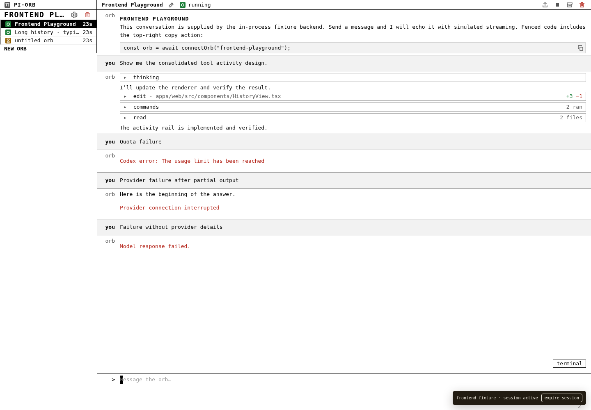
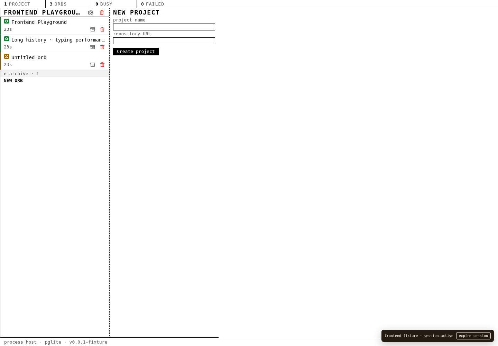

Research, not a new theme
Inspected the running frontend at #/ and #/orbs/frontend-fixture-orb, then measured its rendered geometry. These studies embed the repository’s actual stylesheet, utility SVG sprite, status SVG assets, and a transcript DOM captured from that frontend. Only navigation composition changes. The transcript uses sample content; tool disclosures retain the captured markup.
| Product primitive | Measured / preserved | Source |
|---|
| Body | 13px / 20px, actual monospace stack, #fff / #000 | styles.css |
| Index | 236px; 20px rows; 16px tiles; 2px state border | OrbIndex.tsx |
| Project header | 18px uppercase bold / 24px; gear + red bin | ProjectHeader.tsx |
| Dashboard column | 316px; 22px title + 20px metadata; 4px padding | ProjectsPage.tsx |
| Orb header | 24px; rename, lifecycle, upload, stop, archive, red bin | OrbPage.tsx |
| Conversation | 32px speaker + 12px gap; 4px / 12px padding | HistoryView.tsx / styles.css |
| Composer | 80px textarea; no send button or mode legend | Composer.tsx |
Rejected first pass: warm off-whites, loose spacing, undersized project headings, invented glyphs, missing actions, redundant project chips, and a full-width brand bar. The first study approximated “monospace” while missing the actual product. These five replace it.
Scope: desktop navigation studies, not production changes. Every proposal represents every project and working orb; archives remain disclosures and empty projects retain creation access. The selected Stacked index replaces the bottom NEW ORB line with a + beside the right-aligned gear and red bin. Current is the existing single-project baseline. Orb links and browser Back work locally; drafts stay with their orb. Header/project mutation controls are shown in their existing geometry but are not connected. No telemetry or backend calls.
Actual current orb screenshot (frontend fixture)

Actual current dashboard screenshot (frontend fixture)
